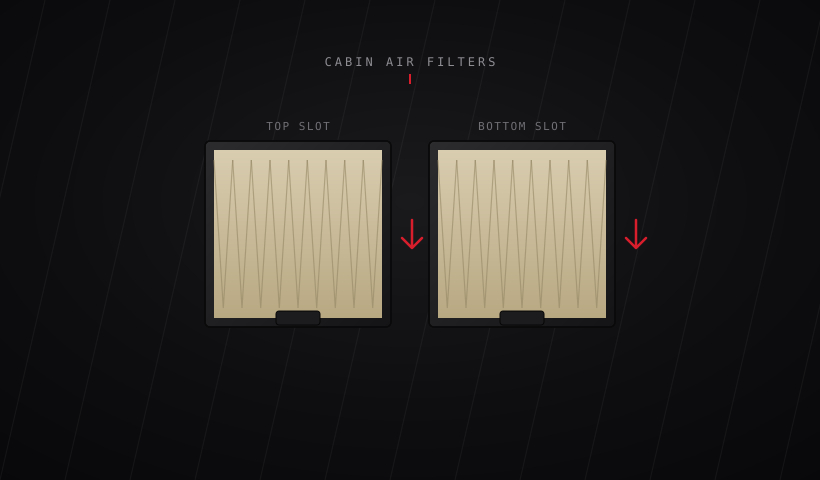
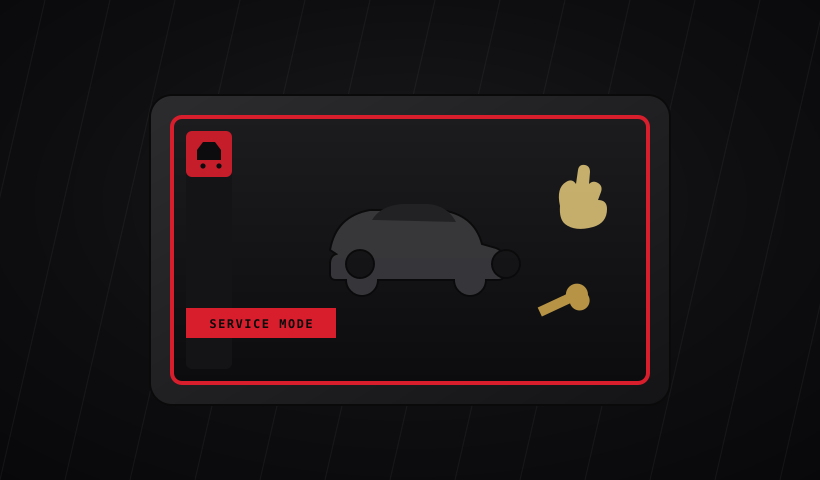

// DIY & Maintenance
Step-by-step guides, torque specs, fluid intervals, and the tool list you actually need before you start.
L4 Garage

Jack points, torque specs, and rotation pattern.
Read guide
Behind-the-console filter replacement, step by step.
Read guide
How to enter, exit, and what it exposes.
Read guideFactory torque specs by wheel size.
Read guide